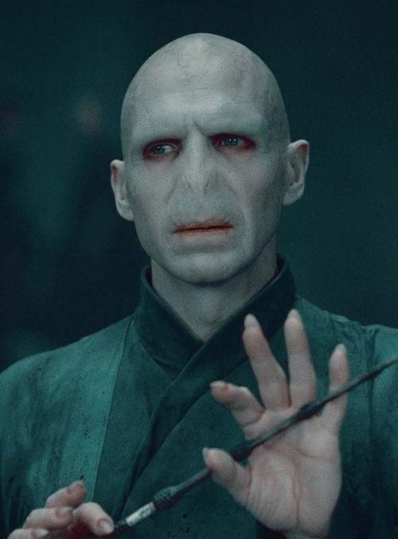

"You think I was going to use my filthy Muggle father’s name forever? I, in whose veins runs the blood of Salazar Slytherin himself, through my mother’s side? I, keep the name of a foul, common Muggle, who abandoned me even before I was born, just because he found out his wife was a witch? No, Harry. I fashioned myself a new name, a name I knew wizards everywhere would one day fear to speak, when I had become the greatest sorcerer in the world!"
Name: Tom Marvolo Riddle
Born:31 December, 1926. Wool's Orphanage, London, Great Britain
Gender: Male
Blood-status: Half-Blood
Social-status: Dark Lord
Tom Marvolo Riddle (31 December, 1926[12] – 2 May, 1998), later known as Lord Voldemort or alternatively as You-Know-Who, He-Who-Must-Not-Be-Named, or the Dark Lord, was a half-blood[2] wizard considered to have been the most powerful and dangerous dark wizard of all time.[13] The only child and son of Tom and Merope Riddle (née Gaunt) via the coercive use of a love potion, Riddle was raised in the Muggle-run Wool's Orphanage after his father abandoned his new family on the streets of London when the potion's influence was lifted, and his mother died moments after giving birth to and naming him after his father and maternal grandfather, Marvolo Gaunt. Riddle began attending Hogwarts School of Witchcraft and Wizardry in 1938 and was sorted into Slytherin house. Some of his early activities included the opening of Salazar Slytherin's Chamber of Secrets and the use of its monster to attack Muggle-born students; several months' service as a purchasing agent for the Dark artefacts shop Borgin and Burkes; the ability to speak Parseltongue; and the attainment of immortality between the years of 1942 and 1998, a process begun upon the creation of his first Horcrux at the age of 16. Voldemort was ripped from his body in 1981 after attempting to kill Harry and, though unable to die, was not able to regain a permanent and physical body until 1995, thus spending the intervening fourteen years "a shell, less than the meanest ghost", but alive. He was finally killed by his own backfiring curse after Albus Dumbledore and Harry Potter, following Dumbledore's death, succeeded in destroying all of his Horcruxes.